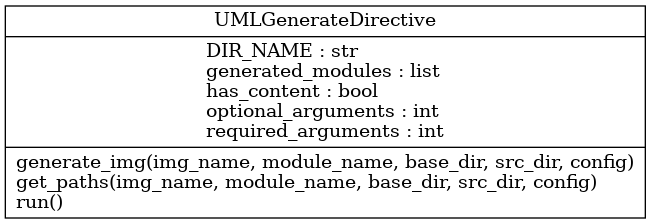

Welcome to test’s documentation!¶
Sphinx-pyreverse¶

A simple sphinx extension to generate a UML diagram from python modules.
Install¶
Install with::
pip install sphinx-pyreverse
Usage¶
Add “sphinx_pyreverse” to the extensions list in your conf.py (make sure it is in the PYTHONPATH).
Call the directive with path to python module as content. The :classes: and
:packages: flags specify which UML diagrams to show.:
.. uml:: {{modulename}}
:classes:
:packages:
Requires pyreverse from pylint.
Options¶
To configure usage, in your conf.py
sphinx_pyreverse_output(see –output), default is “png”sphinx_pyreverse_filter_mode(see –filter_mode), default is Nonesphinx_pyreverse_class(see –class), default is Nonesphinx_pyreverse_show_ancestors(see –show_ancestors), default is Nonesphinx_pyreverse_all_ancestors(see –all_ancestors), default is Nonesphinx_pyreverse_show_associated(see –show_associated), default is Nonesphinx_pyreverse_all_associated(see –all_associated), default is Nonesphinx_pyreverse_show_builtin(see –show_builtin), default is Nonesphinx_pyreverse_module_names(see –module_names), default is Nonesphinx_pyreverse_only_classnames(see –only_classnames), default is Nonesphinx_pyreverse_ignore(see –ignore), default is Nonesphinx_pyreverse_image_max_width(int) Rendered output max width in pixels. default is 1000sphinx_pyreverse_image_scale(float) Scale the rendered output. default is 1.0sphinx_pyreverse_colorized(see –colorized), default is None
Changing the directive¶
To override the directive, which defaults to ‘uml’ set the
SPHINX_PYREVERSE_DIRECTIVE environment variable to whatever you like.
Troubleshooting¶
sphinx-pyreverse uses sphinx-docs’ logging api to write information to the log-files.
To use it run your sphinx-build command with -v -v -v -w $(pwd)/sphinx.log .
For more information see:
Example¶
UML diagram of sphinx-pyreverse.py
{kind=link}